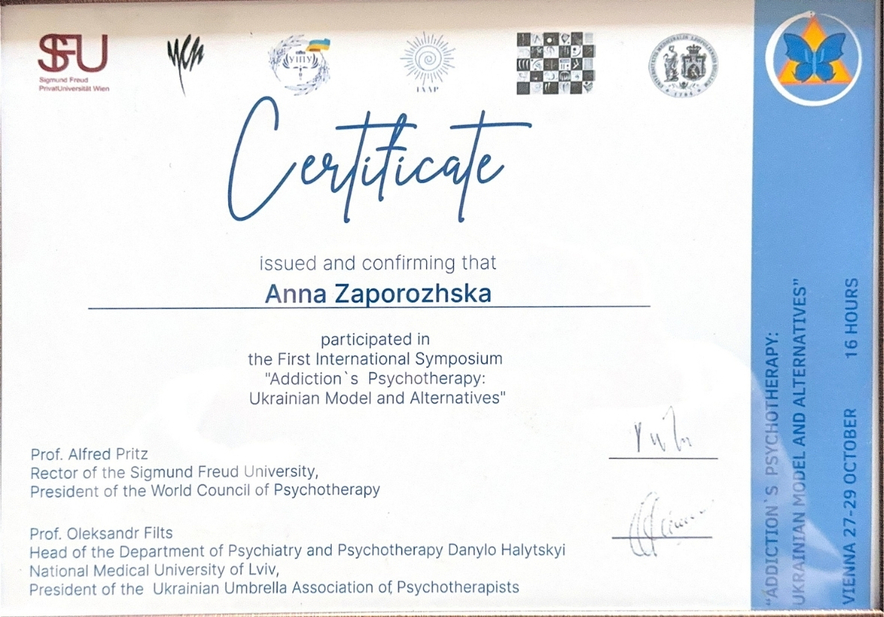
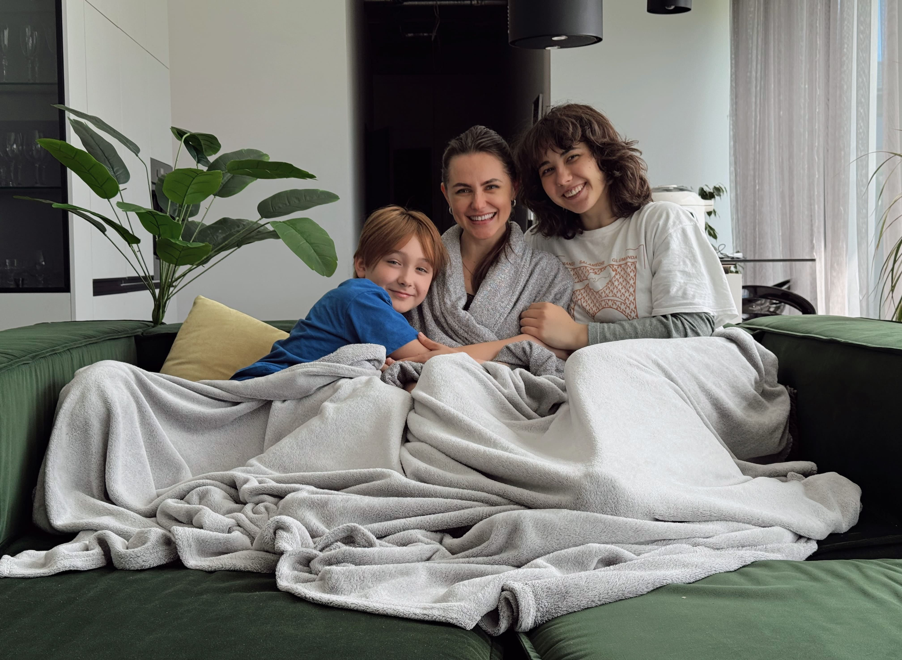
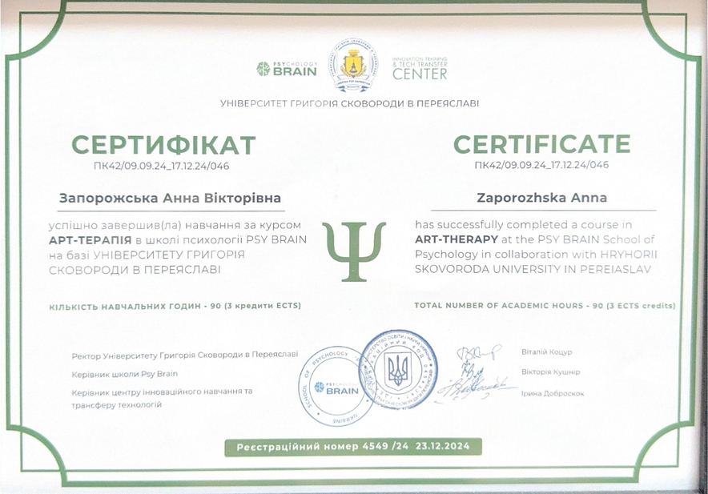
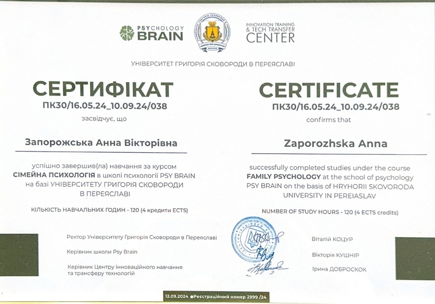
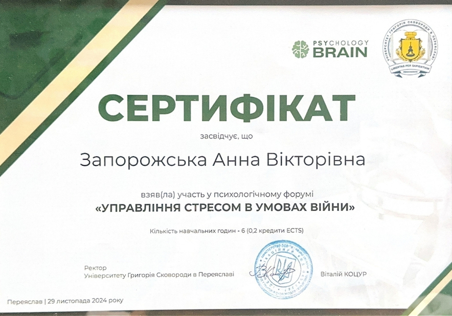
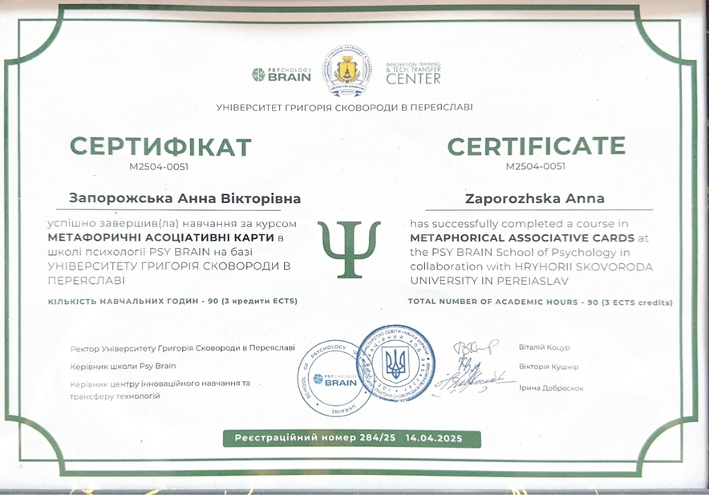
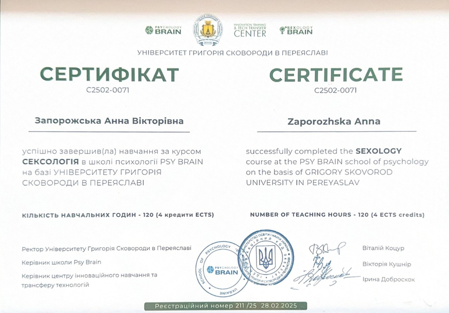
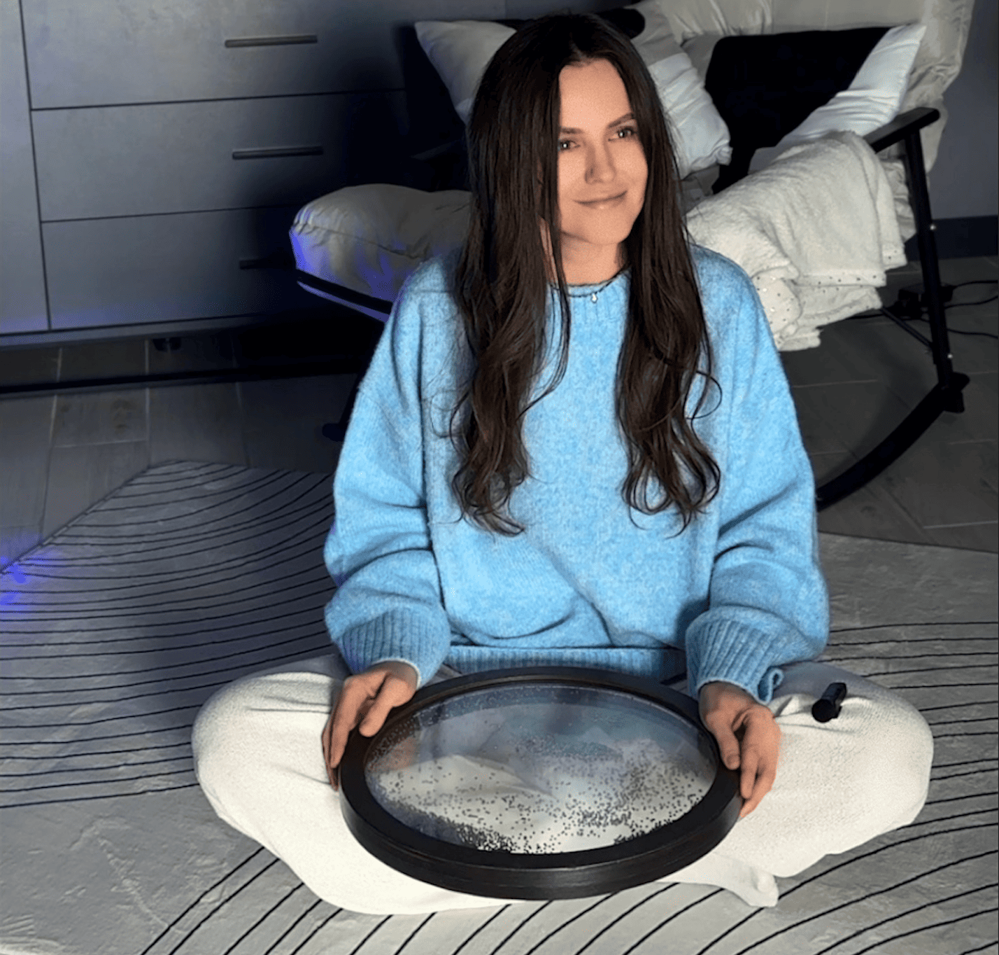
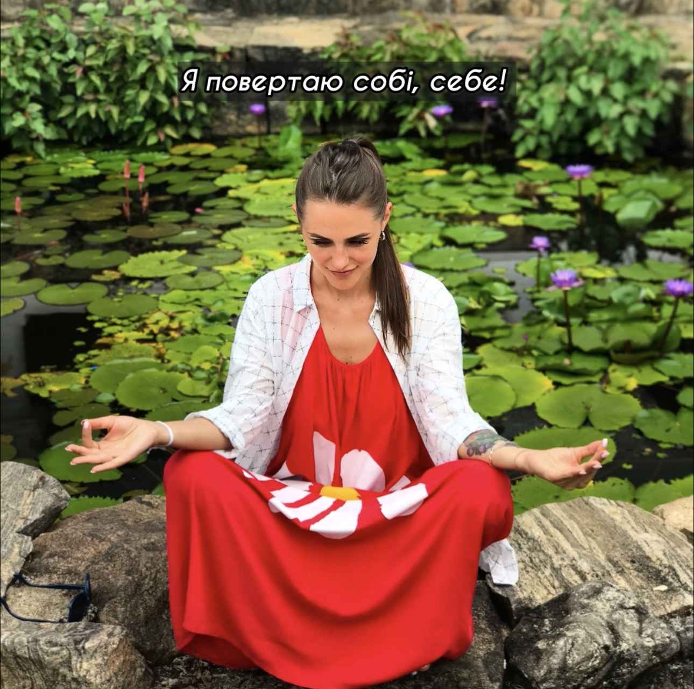

ПСИХОЛОГІЧНА ПІДТРИМКА ОНЛАЙН
Зі мною ви будете без осуду, без тиску, з повагою до вашої
історії і вашого темпу.
Мені є до тебе діло 🫶
Індивідуальні консультації, підтримка у складних життєвих періодах, робота з тривогою, виснаженням та внутрішньою напругою.
Індивідуальна терапія
Робота з тривогою
Емоційне виснаження
Підтримка у кризі
Самооцінка
Відносини
Індивідуальна терапія
Робота з тривогою
Емоційне виснаження
Підтримка у кризі
Самооцінка
Відносини

Про мене
Я поруч, коли життя змінюється і потрібно заново відчути опору
Я дипломований психолог і працюю з жінками, чоловіками, родинами та людьми, які проходять через складні життєві зміни.
У психологію я прийшла не лише через професійний інтерес, а й через власний шлях. Після 15 років шлюбу я залишилась із двома дітьми та великим внутрішнім питанням: як жити далі?
Я почала з нуля. Крок за кроком вибудувала нове життя, кар’єру, внутрішню опору і простір, у якому знову можна дихати. Саме тому в роботі для мене важливі не лише знання, а й глибоке людське розуміння того, як непросто проходити кризи, переосмислення і втрати.
У терапії я поєдную професійність, делікатність і живу присутність. Без осуду. Без поспіху. З повагою до вашого темпу, досвіду і внутрішньої правди.
Сертифікати
Професійний розвиток і навчання
Постійно навчаюсь, поглиблюю практику та розширюю інструменти, з якими працюю в терапії.








Анна Запорожська
ТВІЙ ПСИХОЛОГ
З чим я працюю
Стосунки, тривожність, самооцінка, страхи, панічні стани, внутрішні блоки та емоційна напруга. Це ті запити, з якими я можу бути поруч і підтримати вас.
Також допомагаю краще зрозуміти свої реакції, емоції та знайти внутрішню стабільність у складні періоди життя.
Мій підхід
Працюю через КПТ, символдраму, арт-терапію та тілесні практики. Підбираю методи під вас, без шаблонів. Психотерапія — це партнерство і простір без оцінок.
Я поруч, щоб підтримати вас у вашому темпі і допомогти поступово відновити контакт із собою.
Тілесна практика
Стояння на цвяхах як простір глибшого контакту із собою
У своїй практиці я використовую стояння на цвяхах як інструмент глибокої роботи з внутрішніми відчуттями та пізнання себе.
Це не про фізичний біль, а про чесну зустріч із собою. Через тілесні відчуття людина проживає накопичені емоції, дозволяє собі відпустити те, що довго тримала всередині, і глибше відчути себе.
Коли процес завершується, з’являється відчуття внутрішнього звільнення, спокою та сили, яке складно отримати лише через розмову.
Індивідуальна терапія
Робота з тривогою
Емоційне виснаження
Підтримка у кризі
Самооцінка
Відносини
Індивідуальна терапія
Робота з тривогою
Емоційне виснаження
Підтримка у кризі
Самооцінка
Відносини
З чим я працюю
Запити, з якими я можу бути поруч, підтримати і допомогти знайти внутрішню опору
Як я допомагаю
У терапії ми не просто говоримо про проблему, а поступово знаходимо спосіб повернути вам внутрішню опору
У терапії я допомагаю побачити справжні причини того, що відбувається: розкласти конфлікти на зрозумілі механізми, навчитися взаємодіяти зі своїми емоціями та будувати діалог без руйнування себе й іншого.
Я не просто підсвічую проблеми, а даю конкретні інструменти, які допомагають повернути внутрішню опору і поступово навчитися самостійно керувати своїм життям та стосунками. Ви не самі 🫶
Індивідуальна терапія
Робота з тривогою
Емоційне виснаження
Підтримка у кризі
Самооцінка
Відносини
Індивідуальна терапія
Робота з тривогою
Емоційне виснаження
Підтримка у кризі
Самооцінка
Відносини
Продукти
Практики та медитації для внутрішньої опори
М’які психологічні інструменти, до яких можна повертатися у своєму темпі тоді, коли вам потрібні спокій, ясність і контакт із собою.

Аудіопрактика
Психологічна медитація «Берег спокою»
Це медитація для тих, хто психологічно здоровий, але іноді відчуває тривогу, стрес або втому. Вона повертає вас у стан спокою, в місце, яке дає точку опори.
Найкраще практикувати її вранці, одразу після пробудження, ще до того, як взяти в руки телефон, або перед сном, щоб розслабити тіло і розум перед ніччю. Психологічно така практика допомагає стабілізувати настрій, зменшити внутрішнє напруження і налаштувати мозок на ресурсний стан протягом усього дня.
Медитація називається “Берег спокою”, тому що вона створює вашу внутрішню безпечну точку, через звук океану, мої слова і психологічні техніки. Ви отримуєте відчуття, що можна повернутися сюди будь-коли.
У моїх словах закладено маленький секрет психологічного впливу: вони допомагають мозку відпустити тривожність і знайти стабільність, навіть якщо зовнішній світ шумить війною, поганим настроєм, сварками чи втомою.

Аудіопрактика
Психологічна медитація «Я повертаю собі себе»
Це психологічна медитація для повернення до себе і відновлення внутрішньої опори. Вона допомагає вийти зі стану, де ти постійно підлаштовуєшся під інших, відчуваєш провину або живеш у напрузі.
Це практика для моментів, коли ти ніби втратила контакт із собою і своїми справжніми бажаннями.
Вона м’яко переводить тебе з ролі “я маю заслужити любов” у стан дорослої людини, яка вже має цінність просто тому, що вона є.
Після практики стає більше спокою, ясності і відчуття внутрішньої опори. Зменшується потреба щось доводити або пояснювати.
Це медитація для тих, хто хоче перестати жити за чужими очікуваннями і почати повертати себе собі.
Відгуки
Теплі слова після нашої роботи
Живі відгуки клієнтів про зміни, внутрішню опору, полегшення і шлях до себе.
Анна Запорожська
ТВІЙ ПСИХОЛОГ
Контакти
Конфіденційність
Вся інформація, якою ви ділитесь у процесі роботи, є повністю конфіденційною.
Я дотримуюсь етичних принципів психологічної практики, де безпека, довіра і повага до особистого простору є основою взаємодії.
Ви можете бути впевнені: ваші дані, історія і переживання залишаються тільки між нами.